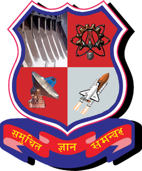
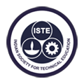

About me
I am a Machine Learning Engineer at State Farm, where I build multi-task transformer models over claim text and structured data and own the serving and MLOps stack behind them. Before that, I was an AI Engineer at BlueMax, building retrieval-augmented generation on self-hosted LLMs, and a Software Engineer at T-Mobile, working on large-scale recommendation models.
I received my M.S. in Information Technology & Management from The University of Texas at Dallas, graduating as a Scholar with Recognition, and my B.Tech. in Electronics & Communication Engineering from Birla Vishvakarma Mahavidyalaya (BVM), where I was advised by Dr. Mehfuza S. Holia. My undergraduate research on computer vision, deep learning, and machine learning for antenna design led to two journal papers and an Indian patent (No. 503842).
Research Interests
Fundamental machine learning, foundation models, representation learning, reasoning and planning, multimodal learning, generalization and transfer learning, and general-purpose artificial intelligence.
News
- Jul 2025Joined State Farm as a Machine Learning Engineer.
- May 2024Joined BlueMax as an AI Engineer, working on retrieval-augmented generation.
- May 2024Graduated from UT Dallas as a Scholar with Recognition (bronze medal).
- Mar 2024Received the Undergraduate Star Researcher Award from Gujarat Technological University.
- Jan 2024Our patent on a touch-free virtual switch was granted (Indian Patent No. 503842).
Experience
Industry
- Built a multi-task transformer over claim text and 68 structured features to predict claim-handling category and severity in one model.
- Owned the serving and MLOps stack, investigating latency–accuracy trade-offs to hold p95 inference latency under 150 ms at 10K+ daily predictions.
- Added PSI-based distribution-shift monitoring and automated retraining under delayed label feedback.
- Built the machine learning components of a self-hosted retrieval-augmented generation system (Llama-2-13B) over about 50,000 internal documents, served on premise.
- Redesigned retrieval as dense search plus BM25 with cross-encoder reranking, raising Recall@5 from about 0.61 to 0.78 on a 500-query benchmark.
- Built the generative-QA evaluation (Recall@K, ROUGE-L, and BERTScore with human validation) to measure retrieval quality and answer faithfulness.
- Co-developed an XGBoost plan-recommendation model for 5M+ postpaid subscribers, scoring newly introduced plans from behavior and attributes without retraining.
- Owned the feature-engineering pipeline; a six-week A/B test raised conversion by about 18% over the rule-based system.
- Added drift monitoring (PSI and Kolmogorov–Smirnov tests) to flag subscriber-behavior shifts and trigger retraining.
Research
- Machine learning for antenna design. Advised by Dr. A. Vahora, reframed X-band microstrip patch antenna design as a learning problem: represented each layout as an image and trained a CNN surrogate to predict its full S11 response (0.60 dB mean error), which stayed accurate on shapes outside the parametric design family where a parametric model did not (0.98 vs 3.52 dB). Surrogate-assisted Bayesian optimization then met the target specification in about 18 full-wave simulations, against roughly 40 for manual tuning.
- Touch-free virtual switch. With Dr. Mehfuza S. Holia and Dr. Milendrakumar M. Solanki, co-designed a wall switch that works three ways: a finger gesture into an LED- and laser-marked zone (microwave presence sensing plus ultrasonic distance sensing), a nearby phone over infrared, or a phone anywhere over Wi-Fi, all driving one microcontroller and relay. Led to a journal paper and Indian Patent No. 503842 (granted 2024); funded with INR 50,000 by the Government of Gujarat (SSIP).
- Sign language recognition from video. Led a camera-only system for Indian Sign Language (first-author paper). Built a skin-segmentation and CNN pipeline for 36 static signs (73.6% accuracy) with a 25-frame majority vote to keep the output stable; recorded a 12-word video dataset and switched the input to frame differences, so skin-colored backgrounds dropped out, with a MobileNetV2 + LSTM model reaching about 85%.
Education
- Scholar with Recognition; Dean's Excellence Scholar (Fall 22 and Spring 23)
- Advisor: Dr. Mehfuza S. Holia · Research area: Computer Vision and Deep Learning; Sensing and Interaction
- Thesis: Design of an X-Band Microstrip Patch Antenna Using Machine Learning and Bayesian Optimization (Link)
Publications & Patent
Awards & Honors
- 2024Scholar with Recognition, The University of Texas at DallasBronze medal on graduation for outstanding academic performance.
- 2024

Undergraduate Star Researcher Award, Gujarat Technological UniversityFor the granted patent on the touch-free virtual switch. - 2022Dean's Excellence Scholarship, The University of Texas at DallasCompetitive merit-based scholarship, Fall 2022 and Spring 2023.
- 2021Top 0.2% on CodeChef62nd globally among 28,000+ competitive programmers.
- 2018

Winner, 14th Innovative Idea Competition, ISTEFirst place in the annual national innovation competition. - 2018Winner, Ideathon'18, BVM Innovation & Entrepreneurship CellINR 20,000 grant to develop the virtual switch.
Skills
- Programming
- Python, C++, SQL, R
- Deep Learning & ML
- PyTorch, TensorFlow, Hugging Face Transformers, scikit-learn, XGBoost, OpenCV
- Models & Methods
- Transformers and multi-task learning; retrieval-augmented generation (dense + BM25 retrieval, cross-encoder reranking); CNNs and MobileNetV2 + LSTM models for images and video; gradient-boosted trees
- Experimentation
- A/B test design and analysis; hypothesis testing (two-proportion z-tests, Kolmogorov–Smirnov tests); distribution-shift detection (PSI); benchmark construction with human validation (Recall@K, ROUGE-L, BERTScore)
- Computing
- Linux, Git, Docker, AWS (SageMaker), MLflow, ONNX Runtime